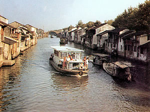

无锡春天有什么好玩的地方？
发布时间:2018-05-04 | 作者:岭南工商 | 来源:互联网
无锡，又名“梁溪”，自“泰伯奔吴”，在梅里建立“勾吴国”，开创吴文化，距今已有三千多年，是一座历史悠久的江南名城。
无锡位于中国江苏省南部，沪宁铁路和沪宁高速公路中段。无锡属亚热带海洋性气候，四季分明，温和湿润，水美土肥，物产丰富，是名闻遐迩的“鱼米之乡”。
无锡充满温情诱人，你能不去寻觉她的神奇，领略她的钟秀，吮吸她的灵气吗？
无锡历史悠久，人杰地灵，经济繁荣，在文化上也充分展示了她瑰丽的特色。
无锡是人文荟萃之地。泰伯、范蠡、秦始皇、陆机、李白、陆羽、王安石、苏轼、文天祥、仉瓒、康熙帝、乾 隆帝等历史名人均曾留下遗迹、诗文，为无锡增光添彩。
无锡还孕育了钱钟书、瞎子阿炳、刘天华、徐悲鸿、孙冶方等一批名声远扬的诗人、艺术家、学者、文豪。
无锡是江南文明的主要发祥地。 无锡凭借优越的自然条件，自古就形成了货物集散，商贾云集之地，明代，无锡的“布码头”已声名远播。清代，无锡米市的繁荣景象，被推为全国四大米市之首.据《汉书》等记载，周、秦时期，惠山东峰(即锡山）大产铅锡，居民竞相采挖。至汉朝锡矿殚竭，故名“无锡”。史称：“有锡兵，天下争；无锡宁，天下清”。
无锡旅游资源丰富，素有“吴中胜地”之称，是中国著名的十大旅游城市之一。其风景集江、河、湖、泉、洞、园之美于一体，具有江南水乡的独特风貌。无锡占有太湖风光最美的一角，太湖之滨的鼋头渚公园、蠡园、梅园、锡惠公园景色如画；古运河、东林书院、泰伯墓、庙、徐霞客故居、黄山炮台、徐悲鸿纪念馆、吴文化公园等人文景观驰名中外，令人驻足寄情，留连忘返。近年来相继建成的无锡太湖影视城“欧洲城”、“唐城”、“三国城”、“水浒城”和无锡太湖国家旅游度假区的月亮湾度假中心、灵山景区（灵山大佛）、龙头渚公园等，又为无锡增添了一道亮丽多彩的风景线。
- 无锡旅游景点攻略 更多>
-
春暖花开，无锡周边的这几个地方...
推荐
 三月份来了 还没走出过年的油腻？ 快趁着大好韶光 投入清新 涤荡一下 赏春第一站，非樱花莫属了。除了咱们咱们鼋头渚的樱花，这些地方也值得一去！ 南...
-
春暖花开，无锡周边的这几个地方...
推荐
三月份来了 还没走出过年的油腻？ 快趁着大好韶光 投入清新 涤荡一下 赏春第一站，非樱花莫属了。除了咱们咱们鼋头渚的樱花，这些地方也值得一去！ 南...
-
春暖花开，无锡周边的这几个地方...
推荐
三月份来了 还没走出过年的油腻？ 快趁着大好韶光 投入清新 涤荡一下 赏春第一站，非樱花莫属了。除了咱们咱们鼋头渚的樱花，这些地方也值得一去！ 南...
-
春暖花开，无锡周边的这几个地方...
推荐
三月份来了 还没走出过年的油腻？ 快趁着大好韶光 投入清新 涤荡一下 赏春第一站，非樱花莫属了。除了咱们咱们鼋头渚的樱花，这些地方也值得一去！ 南...